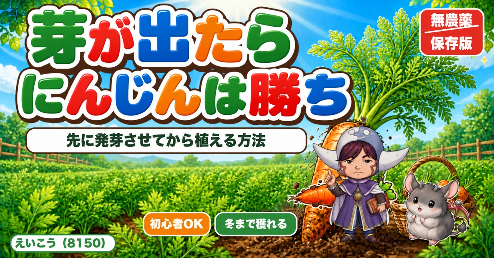
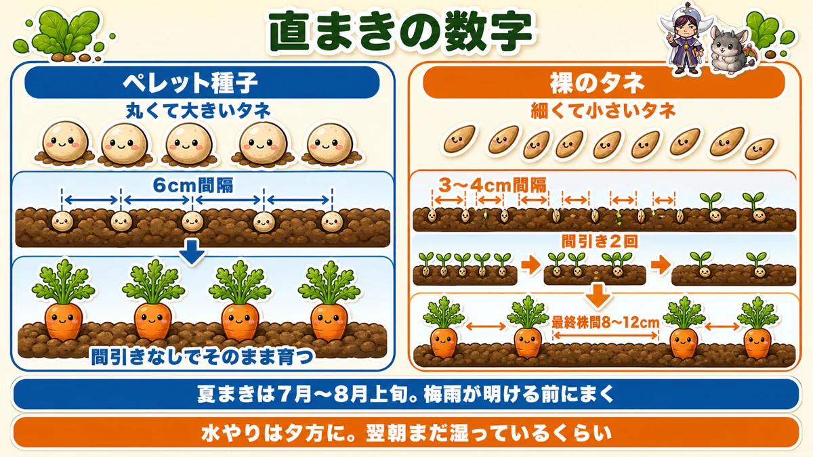
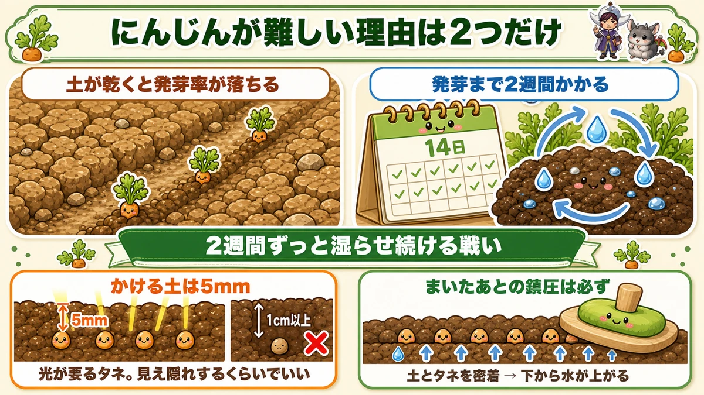
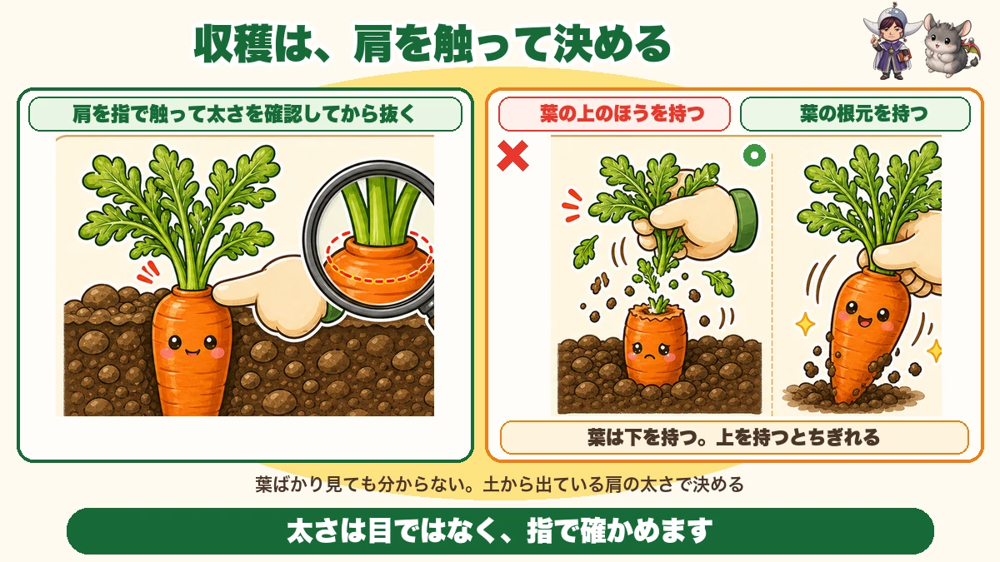
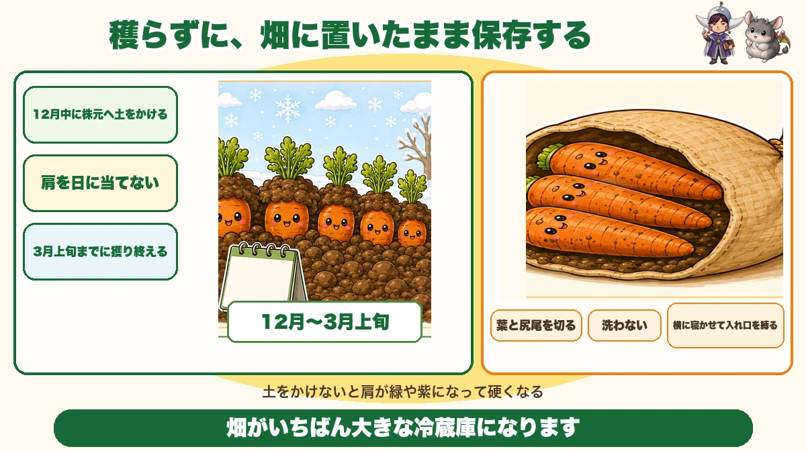
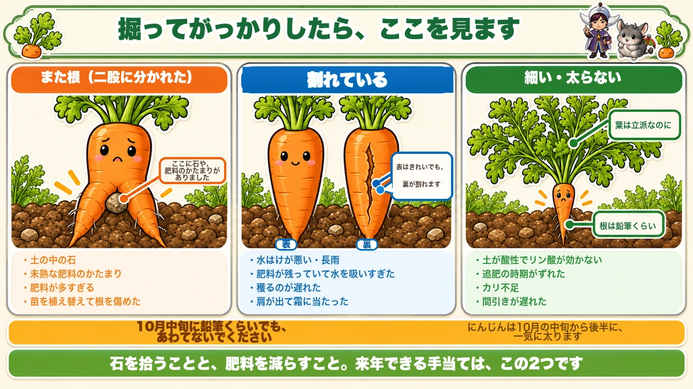

にんじん栽培の調べ物帳｜芽が出ない・根が太らないときの判断と育て方

📖 この記事の目次
この記事で分かること
- まく前に『地域に合う時期』『根を伸ばせる土』『発芽まで水を保てる段取り』をそろえます。
- 発芽の中心は、薄い覆土と土の密着、乾燥と水浸しの両方を避ける管理です。
- 根を太らせるには、葉を守りながら段階的に間引き、肥料の入れすぎも点検します。
- 細い根、二股、ひび割れは別の症状です。掘った形と、これまでの管理を組み合わせて原因を探します。
- 収穫日は日数だけで決めず、株元にある根の太さを確かめます。畑に残す場合は寒さと春の芽吹きを見ます。
- 種の加工、まく間隔、移植などには違う説明があります。このページでは、適用する条件まで比べます。
にんじんって、抜くまで仕上がりが見えにくい野菜ですよね。葉は元気なのに、土の下はどうなってるんやろ・・・。その不安を減らすには、途中で見る場所を決めておくのが役立ちます。
最初は種の周りの湿り気。芽が出たら本葉と株の間隔。収穫が近づいたら根の肩。観察する場所を順番に替えると、全部を一度に心配しなくて済みます。
このページは、栽培の途中でも使える調べ物帳です。これからまく方は『早見』と『作業の手順』へ。すでに育てていて困っている方は『失敗の見分け方』へ進んでください。意見が違って迷ったときは『説明が分かれていること』に戻ればOKです☺️
目指すのは、売り場のように全員が同じ形になることだけではありません。小さめで順番に食べるか、大きく育てるかで株間の選び方も変わります。みなさんが食べたいにんじんに合わせて、まず計画を整理しましょう。
早見：にんじんの育て方（ひと目で分かる数字）
計画に使う数字
- 春まき：材料にある目安は2月上旬〜4月上旬。低温に当たった株のとう立ちを避けるため、春の栽培に向く品種を選びます。寒い地域にもこの期間をそのまま当てはめる意味ではありません。
- 夏まき：一般的な説明は7月〜8月上旬。水分を保ちやすい梅雨中を利用する説明では、6月下旬〜7月上旬にまきます。品種の適期と、その土地の梅雨・暑さを合わせて決めます。
- 冬まき：12月〜2月という栽培例があります。低温期にまける品種と保温などの条件が前提で、全国で露地にまける暦ではありません。
- 遅まきの限界：7月後半までの発芽を重視する説明、9月中旬までとする説明、9月なら小型タイプに替える説明があります。普通の五寸タイプと短期間で収穫するタイプを混ぜて比べません。
- 発芽しやすい温度：15〜25℃が材料の目安です。低温では遅くなり、夏は土の表面の高温にも注意が必要です。
- 発芽の日数：適温なら約10日。8℃以下では30日を超えることもあるという説明があります。日数は、まいた日と温度を一緒に記録します。
- かぶせる土：3〜5mm、5mm〜1cm未満、種がちらっと見える程度、という幅があります。深く埋めず、同じ厚さにそろえる点は共通です。加工種子は袋の指示も確認します。
- 耕す深さ：20〜30cmが目安。深さだけでなく、根の進む位置に石や硬い土塊が残っていないかを見ます。
- 土の酸度：pH6.0〜6.5が目安です。測らずに毎回同じ量の酸度調整資材を追加する方法とは分けて考えます。
- うね幅と列：幅60cmのうねに2列という例があります。条間は20cmの説明と、専用の被覆栽培で15cmの説明があります。条間は列と列、株間は同じ列の株同士の距離です。
- 裸の種の粒間：1cm、2〜3cmという説明があります。小さな種を大量に重ねると、後の間引きが大変になります。
- 加工種子の粒間：6〜7cmで、込み合う場所だけ調整する例があります。これは裸の種を密にまく方法とは別の組み立てです。
- 点まきの粒数：1か所2粒、4粒、4〜5粒、多くて6粒という異なる説明があります。芽が欠けるリスクと、間引きに使える時間で選びます。
- 1回目の間引き：本葉2〜3枚を目安に、株同士を2〜3cm程度離す方法があります。
- 最後の間引き：本葉5〜6枚を目安に行います。最終株間は5〜12cmと幅があり、6〜8cmで本数を確保する考え方と、10〜12cmで太さをねらう考え方があります。
- 元肥の準備：使う資材の分解状況によって、種まきの2〜3週間前、冬は1か月以上前という説明があります。前作の肥料が残る場所では、追加せず始める方法もあります。
- 追肥の区切り：間引きに合わせて1〜2回、または元肥で足りるため0回という説明があります。発芽から約1か月を重視する話と、種まきから80〜90日ごろの肥料の効きを重視する話もあります。
- 浅く土をほぐす深さ：列の間など、根から離れた位置を4〜5cm程度。収穫までに2回ほど行う説明があります。濡れた土は無理に触りません。
- 収穫までの日数：普通の五寸タイプで約110日、早く収穫する細長いタイプで約70日、冬まきで約130日という例があります。品種と季節が違うので、平均して一つの数字にしません。
- 収穫の太さ：根の肩の直径が約3cmという目安があります。小型品種や、細い状態で食べたい栽培には別の判断が必要です。
- 同じ科を避ける間隔：セリ科を1〜2年あけるという説明があります。被害の履歴がある場所で、この年数さえ守れば解決するという保証ではありません。
- 畑に残す保存：秋に育てた根を冬の間残し、2月〜3月上旬までに収穫する例があります。春の動き出しが早い土地では、暦より株の様子を優先します。
数字を作業に変える確認メモ
- 種袋にある地域別の適期と、手持ちの種の期限を見た
- 種まき日・発芽日・間引き日を別々に残す場所を用意した
- 列の幅と、最終的に残す株の間隔を分けて考えた
- 前作の肥料と、雨のあとに水が残る位置を確認した
- 収穫は日数と根の太さの両方で決める予定にした
種まき日と発芽日は、地味ですが分けて残してください。同じ日にまいた列でも、乾きやすい端と湿った中央では芽のそろい方が違うことがあります。追肥の説明を読むときにも『まいてから何日』なのか『芽が出てから何日』なのかが分かると、話を取り違えにくくなります。
初めてなら、日程と株間を一つの栽培方法としてそろえるのが楽です。早く収穫する小型タイプの70日だけ借りて、大きな五寸にんじんを育てる計画に入れると、収穫予定が先走ります。数字には、その数字が成り立つ条件も一緒についているんですよね。
作業の手順（時期の順）
1．季節と食べ方を決めて、種を選ぶ
- 『秋冬に太い根を収穫する』『春から始める』『小さめを早く食べる』のどれを目指すか決めます。
- 種袋の地域別の適期を読み、今の季節に対応する品種か確認します。
- 去年から残った種を使う場合は、保存期間と暑い季節を越したかを確認します。
- 加工された粒か、裸の小さな種かを見て、まき方と水分管理をセットで決めます。
五寸タイプの根長は15〜20cmという目安です。地面の上にはその長さが見えないので、耕す深さや容器の深さを先に考える必要があります。浅い場所しかないなら、小型タイプを候補にして種袋で根の長さを確かめてください。
夏まきは、秋に根を太らせて冬に食べる計画に組み込みやすい作型です。ただ、夏の土の表面は乾きやすく、発芽には手がかかります。まく日だけ空いていても、その後の水の確認ができないなら、段取りを見直したいところです。
冬は虫が少ない時期を使える一方、生育に時間がかかります。約130日という例なら、春の野菜の準備まで場所がふさがる可能性があります。『発芽が楽そう』だけで選ばず、その場所をいつ明け渡したいかも決めましょう。
古い種がすべて駄目になるわけではありませんが、にんじんは種の保存状態が結果に響きやすい野菜です。種まきの手間と場所を確保するなら、使える期限と保存条件が分かるものを選ぶ方が計画を立てやすくなります。
2．土の中の障害物と、水の逃げ道を整える
- 前に育てた野菜と、肥料を入れた履歴を調べます。
- 雨のあと、水がたまり続ける位置を見つけて、うねや通路の排水を整えます。
- 根が伸びる層を20〜30cmの目安で耕し、石と硬い土塊を拾います。
- 元肥を使うなら土の中へ偏りなく混ぜ、塊を残さず、分解や土のなじみを待ちます。
- 最後に表面を細かく整え、深い穴や水のたまるへこみを残さないようにします。
耕すのは、数字どおりの深さの穴を作るためではありません。根の先が進む通り道を整える作業です。表面だけきれいでも、その下に硬い土の層や大きな石があると、根が曲がったり分かれたりする原因になります。
肥料は『根菜だから多く入れておく』と決めないでください。前の野菜で使い切れなかった分が残る畑も、新しい土で不足する畑もあります。土の準備で何を足すかは、この違いを調べてからです。
未熟な有機物や肥料の塊を、種の下へまとめて置く方法は避けます。土をよく混ぜても、すぐに分解が終わるわけではありません。冬は分解が進みにくいことも考え、使うものの説明にある準備期間を取りましょう。具体的な配合や量は、別の資材の数字を流用しません。
水はけが悪い場所では、水を増やす管理の前に、抜ける方向を作る方が先です。雨が降ったあと、同じ列の一部だけ水たまりになるなら、にんじんの種より土地のへこみを直す場面かもしれません。
3．雨と管理できる日を合わせて、まき床を湿らせる
- 品種の適期の中で、土に湿り気がある日を探します。
- 雨のあとなら、水が引いて作業できる状態になっているか確かめます。
- 乾いている場合は、種をまく前にまき床へ水を行き渡らせます。
- 表面を軽くならして、列を作る位置を決めます。
- 発芽まで訪ねられる頻度と、乾燥を防ぐ被覆の使い方を確認します。
梅雨中の種まきが勧められるのは、にんじんが雨の日を好きだから、というだけの話ではありません。乾きやすい小さな種の周りに、水分を保ちやすい条件を作れるからです。
ただし、雨なら何でも歓迎ではありません。豪雨で土が流れる、溝が水で埋まる、という状態でまくと、種の位置も土の空気も保ちにくくなります。『雨で湿った土』と『水につかった土』を区別してください。
忙しくて毎日見られない方ほど、まく前の水と被覆の準備が役立ちます。まいたあとに土が乾いてから道具を探すと、発芽までの一番気を使う時期に間が空いてしまいます。ここだけは先にそろえておくと、なんか気持ちも楽です。
4．薄く均一に覆土し、種と土を密着させる

- すじまきなら列の位置をそろえ、点まきなら株を残す位置を決めます。
- 選んだ方法の粒間・粒数で種を置き、かたまって落ちた場所を減らします。
- 細かな土を薄くかけます。3〜5mmなどの目安を使い、列の途中で厚さを変えません。
- 手のひらや平らな板で表面を押さえ、種の周りの土を密着させます。
- 水を足すときは、低い位置から穏やかにかけ、土と種を流さないようにします。
種が小さいと、心配になって土を追加したくなるんですよね。でもにんじんでは、厚くかけるほど安心という関係にはなりません。光の届きやすさと、芽が地上へ出るまでの距離を考えて、薄くそろえる方を優先します。
土を押さえる作業を鎮圧といいます。ふわっと置いた種の周りに大きなすきまが残ると、湿った土との接触が不足します。押さえるのは、そのすきまを減らすためです。広い面積を足で踏む説明もありますが、どの土でも強く踏めばよいわけではありません。
雨直後のべたつく土は、強く踏むと固まりやすくなります。乾いた軽い土での圧の話を、そのまま湿った土へ持ち込まないでください。指で触って崩れる状態か、練ったように固まる状態かを見て、押さえ方を調整します。
水をかける最初の勢いも見落としやすいところです。ジョウロは種のない端で水流を落ち着かせてから、まいた列へ移します。上から勢いよく注いで土が動いたら、薄くそろえた覆土が崩れてしまいます。
5．発芽するまで、乾きと過湿を点検する

- 乾燥を抑える不織布を使う場合は、まいた場所に沿わせてかけます。
- 表面の見た目だけでなく、種のある浅い位置の湿り気を確認します。
- 夏は早朝や夕方など、暑さの弱い時間に水分を補います。
- 水がたまり続ける場所があれば、追加の水を止め、排水を確認します。
- 発芽した位置と日付を記録し、芽のそろい方を見ます。
不織布は、乾燥を抑える助けになる資材です。ただ、かけたら水の確認が不要になるものではありません。下の土が乾いているなら補水が必要ですし、水がたまっているなら別の対応が必要です。
芽がそろった直後にも暑さへ注意してください。材料には、本葉1〜2枚まで被覆を残す説明があります。暑い日に一気に外し、弱い芽を強い日差しと乾いた空気へさらすのは避けたいところです。蒸れや熱のこもり方も見て、外す時期を決めます。
朝晩の2回という数字だけ守るより、前にやった水がどう残っているかを見る方が役立ちます。夕方の水が朝まで残る土もあれば、風で短時間に乾く土もあります。雨の日に同じ量を追加する必要はありません。
まだ出ていない場所を毎日掘り返すと、発芽途中の根を傷つけることがあります。どうしても状態を知りたいときは、端の一部分だけ調べ、列全体を動かさないようにします。
6．草を減らし、間引きを2段階で進める
- 芽がそろったら、にんじんの列と雑草の位置を確認します。
- 列の間の草は小さいうちに取り、株元の草は根を動かさないように外します。
- 本葉2〜3枚のころに、込み合う場所を2〜3cm程度へ広げます。
- 本葉5〜6枚のころに、収穫したい大きさに合わせて最後の株間を決めます。
- 間引いたあとにできた穴を埋め、残した株の周りを落ち着かせます。
最初から最終株間にしてしまうと、その後に育たない株が出たときに大きな空白が残ります。二段階に分けるのは、育ちを見ながら残す場所を調整するためです。数字を二回測るためだけの作業ではないんですね。
残す株は、病気や傷みのないものを優先します。育ちをそろえたい栽培では平均的な株を選ぶ説明があり、家庭菜園では大きく元気な株を残す考え方もあります。全体を同じ日に収穫するか、順番に収穫するかで選び方が変わります。
隣に芽の出なかった場所があるなら、そこへ葉や根が広がる余地があります。株間だけ見て機械的に抜かず、欠けた場所も含めて配置を見てください。
葉が絡んで抜きにくい株は、周囲を押さえて少し動かします。強く引いて残す株まで浮きそうなら、はさみで地際を切る方法もあります。間引きは本数を減らす作業ですが、残す根を守ることが一番です。
7．葉と土を見て、追肥・土寄せを判断する
- 葉色、葉の混み方、前に入れた肥料を確認します。
- 追肥する方法を選んでいる場合は、間引きの区切りで必要量を判断します。
- 根元へ固めて置かず、列の間や株から離れた位置に分散させます。
- 列の間の表面を4〜5cm程度の浅さでほぐします。
- 肩が土から出ている株には土を戻し、育っている中心の芽は埋めません。
追肥をしない場合も、表面の草や硬い層を点検する作業は残ります。肥料と土をほぐす作業は一緒に行いやすいですが、目的は別です。土をほぐすために肥料を足す必要はありません。
葉が立派だから、その分だけ根も立派とは限りません。反対に、収穫まで時間が残っている段階で根が細くても、すぐ失敗とは言えません。葉、日数、株間、根の肩を合わせて見てください。
土寄せは、地上へ出た根の肩を光や霜から守る作業です。大きくしたいからと、成長中の株の葉の中心まで土をかける方法にはしません。冬の保存のため厚く覆う話とは、場面を分けて使います。
8．葉を食べる虫と、地面の乾き方を見回る
- 葉の量が急に減っていないか、株の中心から全体まで見ます。
- 葉や茎に卵・幼虫があれば、種類と被害を確認して取り除きます。
- 倒れた幼い株は、株元がかじられていないか調べます。
- 病気らしい葉は場所と広がりを記録し、排水と風通しも点検します。
- 発芽後の水は土の中の乾き具合を見て判断します。
キアゲハの幼虫は、成長すると食べる量が増えます。秋に葉を残して根を太らせたい時期ほど、葉の減り方を見て早く対応したいところです。2週間に一度という見回り例もありますが、虫を見つけたあとまで同じ間隔で待つ必要はありません。
発芽を終えて根が伸びた株は、種のときより深い場所の水を使えます。地植えで土中に湿り気が残るなら、発芽前と同じ頻度で水を足し続けません。一方、容器や長い乾燥では別です。『発芽後は水不要』を、すべての栽培へ広げないでください。
9．肩の太さを確かめ、食べる分から収穫する

- 品種の収穫日数が近づいたら、株元の土をそっとよけます。
- 根の肩を指で触り、ねらう太さに近づいた株を選びます。
- 葉の付け根に近い低い位置を持ち、根を折らないように引き上げます。
- 固い土なら周囲をゆるめてから抜き、葉だけで無理に引っぱりません。
- 抜いた根の裏側や先端も調べ、割れ・こぶ・分岐がないか見ます。
一度に全部抜く必要はありません。太った株から食べる分を収穫すると、小さな株の様子も続けて見られます。葉の大きさで選ぶより、肩を触る方が収穫の判断に直接つながります。
寒い朝に土が凍っていると、抜きにくいうえに根が折れることがあります。その日のうちに必要なら、土がゆるむ日中を選びます。引く力で解決しようとせず、土の状態を替える感じです。
10．残す根と持ち帰る根で、保存の段取りを分ける

- 畑に残すなら、収穫できる太さの健全な株を選びます。
- 本格的な寒さが来る前に肩へ土をかけ、場所が分かる目印を置きます。
- 強い凍結や水たまりが起こる場所では、畑での保存にこだわらず収穫を考えます。
- 持ち帰る根は葉を切り離し、乾きすぎないように包むか袋に入れて、涼しく保ちます。
- 保存中も傷みを確かめ、春に新しい葉が動く前に畑の分を食べ切る計画にします。
屋内保存では、少量を袋や紙で包んで冷蔵する方法と、大量を米袋へ入れる例があります。大量に収穫したからと暖かい室内へまとめて置くと、乾燥や傷みの確認が難しくなります。袋の種類だけで保存期間が決まるわけではありません。
長く置く予定の健全な根は、土を軽く落として洗わずに保存する説明があります。割れや傷がある根は長期保存の列から外し、状態を確認して早く使う方へ分けます。腐敗や異臭のあるものを、加熱すれば大丈夫と扱いません。
冬の畑は葉が倒れたりなくなったりすると、どこに株があるのか分かりにくくなります。目印には、まいた日や品種を書いておくと収穫の順番も見やすくなります。土の下の保存場所、忘れないようにしたいですね。
11．片づけと、次の作付けを記録する
- 最後の根を収穫したら、病気やこぶのあった位置を記録します。
- 被害のある根や残った株を取り除き、その場へ埋め戻さないようにします。
- 次に同じセリ科を続けない配置を考えます。
- 次の野菜に必要な肥料は、にんじんのあとだからと自動的に決めず、残り方を確認します。
枝豆やねぎが後作の候補として挙がっています。ただし、植える季節と次の野菜の適期が合うことも必要です。病害虫が出た場所では『おすすめの組み合わせ』より被害の履歴を優先してください。
前作・後作の相性を覚えるより、まいた場所と結果を残す方が次につながります。細い根が多かった列、割れた列、よく育った列を分けて書くと、翌年に土や水の管理を比べやすくなります。
失敗の見分け方（症状→原因→やること）
まいた列に、ほとんど芽が出ていない
- 症状：列全体が空いたまま、または一部分だけ芽が出ています。
- 考えられる原因：覆土が厚い、種と土の接触が少ない、乾燥、水たまり、温度の不適合、古い種などです。
- やること：まいた日と温度を確認し、列の端で土の湿り気と覆土の厚さを点検します。まき直すなら、原因を一つ直してから行います。
『10日たったらまき直す』という説明は、適温で順調に発芽する条件の目安です。寒い時期には発芽まで30日以上という例もあるので、日数だけでは判断できません。種袋の発芽条件と実際の温度を照らし合わせましょう。
同じ種なのに一部分だけ出ているなら、種そのもの以外の原因も考えやすくなります。乾きやすい端、水が残る低い場所、土を厚くかけた場所を比べてください。出ている株は残し、空いた場所だけ適期内でまき足す方法もあります。
芽が出たのに、日差しの強い日に消えた
- 症状：小さな芽がしおれ、茶色くなって枯れています。
- 考えられる原因：発芽直後の高温と乾燥、被覆を急に外したこと、根の周囲の水分不足です。
- やること：残る芽の周りの湿り気と熱のこもり方を確認し、被覆や補水を調整します。株元が切れていないかも見ます。
まく前の温度が適していても、翌週に暑くなることがあります。葉が少ない時期は強い日差しで傷みやすいため、発芽を確認した日を管理の終了日にしないことが大切です。
乾いた芽へ慌てて大量の水を入れると、今度は流されたり水につかったりします。土を動かさない水流で補い、直射と乾燥の条件も同時に見直します。水だけで暑さの問題を全部片づけようとしない感じです。
雨のあと、表面が板のように固い
- 症状：土の表面が固まり、芽が出る位置に硬いふたができています。
- 考えられる原因：細かな土が雨で締まり、その後の乾燥で表面が固くなったことが考えられます。
- やること：まいた列を深くかき混ぜず、芽を傷つけない範囲で表層だけをそっとほぐします。水の勢いと排水も見直します。
種を押さえることと、土の表面を固い塊にすることは違います。発芽前の根や芽は小さいので、硬い層を壊すために深く掘ると一緒に傷めます。作業範囲を小さくし、種の位置を意識してください。
次の種まきでは、表面へ水を強く打ちつけないこと、湿りすぎた土を踏まないことが予防につながります。出なかった列へ水だけ追加し続ける前に、触った感触も確かめましょう。
幼い株が、根元から倒れている
- 症状：葉が残ったまま倒れ、株元が切れたりかじられたりしています。
- 考えられる原因：ネキリムシなどの食害、根の傷み、強い雨や霜柱による浮き上がりです。
- やること：切り口と周囲の土を確認し、食害なら株元近くに隠れる虫を探します。根が浮いている場合は、周囲の土を戻して密着させます。
倒れた株を全部『水が足りない』と見ると、虫や霜の原因を見逃します。葉の色だけでなく、地面との境目を見てください。切られている、根が浮いている、根元が腐っている、では次の作業が違います。
霜柱が立った場所は、根と土の間が離れて乾きやすくなります。寒い朝のあとに苗が持ち上がっていないかを見て、押し戻すときは株そのものを潰さず周りを整えます。
葉が食べられて、茎が目立つ
- 症状：葉の面積が急に減り、茎だけ残る株があります。
- 考えられる原因：キアゲハなど、葉を食べる幼虫の被害です。
- やること：葉と茎、株の中心付近を確認し、卵や幼虫を見つけた段階で取り除きます。近くのパセリやセロリなども調べます。
根を太らせる時期に葉を失うと、根へ送る養分を作る面積も減ります。掘っていないから被害が小さく見えても、収穫に関係する場所です。虫が大きくなる前に見つける方が、残せる葉も多くなります。
秋から冬へ向かうと被害が減る傾向はありますが、『11月だからもう虫はいない』と決めません。暖かい地域や暖かい年には様子が違います。暦は見回りの参考、最後は実物です。
葉に白い粉、黒っぽい枯れ込みがある
- 症状：葉の表面が白く見える、葉に暗色の斑点が出て枯れる、という変化があります。
- 考えられる原因：うどんこ病や葉枯れ性の病気などが候補です。水分や風通し、生育の弱りも確認します。
- やること：症状の出た葉と位置を記録し、広がりを見ます。病名が分からないまま肥料や水を大量に追加せず、写真を使って相談できるようにします。
葉が黒く枯れる症状については、乾燥を重視する説明と、排水・風通しの悪さを重視する説明が材料にあります。黒い葉だけを見て『もっと水』と決めると、土が湿りすぎた株では逆方向になります。
その株だけなのか、低い場所の列全体なのか、葉が混み合った部分なのかも見てください。傷んだ葉を整理するときは、健全な葉まで大量に減らさないようにします。根を育てるための葉を残しながら対応する場面です。
葉は伸びるのに、根が細い
- 症状：地上の葉は大きいものの、根の肩はまだ細いままです。
- 考えられる原因：まだ肥大前、遅まき、間引きの遅れ、肥料過多、肥料不足、酸度や排水の問題などです。
- やること：発芽日、品種の収穫日数、株間、葉色、前作の肥料を順に確認します。原因を絞る前に追肥しません。
秋の栽培では、10月中旬に葉が30〜40cmでも根は鉛筆ほどで、その後に太ったという観察が材料にあります。これはその時期・条件での例です。同じ細さでも、収穫予定まで時間がある株と、寒さで生育が止まりかけた株では見方が変わります。
まず、混み合って根を広げる場所がないかを見ます。次に肥料の履歴です。濃い葉が密に茂る株へ追加の肥料を入れても、根が太くなるとは限りません。葉が弱い場合も、根が水浸しなら肥料以前の問題です。
遅れた株を保温して育ちが改善した例もあります。ただし、すべての遅まきを取り戻せる方法ではありません。健全な葉が残る段階で、残りの季節と地域の温度を考え、小さなにんじんとして収穫する選択も持っておきます。
葉が黄色く、先端から傷んでいる
- 症状：葉色が薄くなり、葉先が枯れて、生育が鈍くなっています。
- 考えられる原因：窒素不足という説明がありますが、低温、根の傷み、過湿、病気でも葉色は変わります。
- やること：全株か一部かを確認し、土の水分と根元の状態を調べます。肥料不足と判断できる場合に、使う資材の表示に従って補います。
黄色い葉を見た瞬間に液体肥料、という判断にはしません。根が傷んで吸えない状態では、土に肥料を追加しても葉が回復しないことがあります。材料にも複数の原因が出てくるので、葉色を一つの手がかりとして使います。
抜くと二股や、枝分かれした根になっている

- 症状：根が途中で二つ以上に分かれ、まっすぐな形ではありません。
- 考えられる原因：石や硬い塊、未熟な有機物、肥料の偏り、根先の傷などです。
- やること：形を記録し、同じ深さで分岐する株が多ければ土中の障害物を調べます。次の栽培では土を整え、根を傷める移植を避けます。
一度分かれた根を、あとからまっすぐに戻すことはできません。そこで肥料を足すより、今回の食べられる部分を確認し、次に同じ原因を残さない方へ進みましょう。
肥料を入れたから必ず二股、という単純な関係ではありません。肥料の塊や過多は候補ですが、石に当たった株や移植した株もあります。抜いた形と作業の記録を照らし合わせると、原因を一つに決めつけずに済みます。
根にひびが入り、内側が見える
- 症状：根の表面に縦や横の割れ目があり、裏側だけ割れていることもあります。
- 考えられる原因：急な水分変化、長雨や排水不良、肥料の残り、収穫の遅れ、肩への霜の影響などです。
- やること：雨の履歴と収穫予定を確認し、食べ頃の株は収穫を進めます。割れた根は健全な根と分け、長く保存しません。
外から見えた面だけでは判断できないので、収穫したら回して全周を見ます。割れ目へ土や水が入り、傷みが進んでいる場合があります。臭いや軟らかい腐敗があれば、単なる形の問題として扱いません。
割れを防ぐためにずっと水を切る、という逆方向へ振り切らないでください。にんじんにも水は必要です。水が長く滞留しない土と、急に変わりすぎない水分管理を考えます。
根の肩だけ、緑っぽくなっている
- 症状：葉の付け根に近い部分が露出し、色が変わっています。
- 考えられる原因：土の表面へ出た肩が光に当たったことが考えられます。
- やること：まだ畑にある健全な株は、露出した肩へ土を戻します。周囲の株も点検し、間引きや雨で土が動いていないか確認します。
葉を全部埋めるのではなく、根の見えている位置を覆います。冬の保存では厚く土をかける話もありますが、いま根を育てている株に同じやり方を持ち込まないことが大切です。
根が短く、こぶや凸凹が多い
- 症状：根が不自然に短い、曲がる、細かな根や本体にこぶ状の変化があります。
- 考えられる原因：ネコブセンチュウなどの被害が候補ですが、形だけで確定はできません。
- やること：被害の株と場所を記録し、根を残さず片づけます。同じ場所へ根菜を続ける計画を見直し、必要なら現物や写真で相談します。
肥料が足りないから形が悪い、と考えて追加すると原因を見失います。被害が同じ場所へまとまっているか、前の野菜にも根のこぶがあったかを調べてください。
材料には太陽熱を利用した土の処理などの対策例があります。ただ、資材を少しまけば線虫が消えるといった保証にはしません。被害の種類、場所、次に植える作物まで含めて対策を選びます。
説明が分かれていること
夏まきは梅雨中か、7〜8月か
- Aという説明：栽培動画では、6月下旬〜7月上旬の湿った時期を利用し、発芽中の乾燥を避ける段取りが示されています。
- Bという説明：7月中旬からまく説明や、種袋に4月中旬〜8月中旬という広い期間が書かれていた例があります。
- どう考えればよいか：種袋の地域と作型を確認したうえで、適期内に水分を維持できる日を選びます。
種袋の期間は、種をまけば毎日同じ難易度で育つという意味ではありません。梅雨のある地域では雨を利用しやすい日があり、別の地域では雨の時期が違います。品種の適期を外してまで雨だけ優先するのも避けます。
『7月後半までに芽を出したい』という説明と『9月まで可能』という説明にも、収穫したいサイズや地域の違いがあります。遅くまいても同じ太さになると読み替えず、遅れるなら小型品種や小さな収穫へ計画を変えます。
裸の種か、ペレット加工の種か
- Aという説明：裸の種は多めにまきやすく、加工部分を溶かす管理が不要という利点が挙げられています。
- Bという説明：丸く加工した粒は位置をそろえやすく、広い面積でも作業しやすいと説明されています。
- どう考えればよいか：粒の置きやすさと、水を保てる条件の両方で選びます。袋の加工種子用の指示を優先します。
どちらが常に発芽率で勝つ、という材料ではありません。加工した粒も、裸の小さな種も、乾きやすい土へ放置すれば難しくなります。ペレットでは中途半端な湿り方が問題になるという指摘があるため、まく直前だけ濡らして終わりにしません。
同じ値段で買える粒数の違いも材料にありますが、価格が何倍という数字を現在の商品の共通値にはしません。購入時に袋の粒数を比べれば、その場所に足りる量かを判断できます。
覆土は3mmか、5mmか、1cm近くか
- Aという説明：3〜5mm、または種が見え隠れする程度の薄さを勧めています。
- Bという説明：5mm〜1cm以内、加工粒の径の約2倍という別の目安があります。
- どう考えればよいか：数値を平均せず、種の加工と土の状態を合わせます。薄く均一にかけ、深い穴の底へ埋めません。
覆土を薄くするだけで水分が保てるとは限りません。裸に近い表面は乾きやすいので、土の密着や被覆を組み合わせます。反対に、水分を保つために深く埋めると、芽が地上へ出る負担が増えます。
光を好む性質は、種をむき出しで直射日光に焼く指示ではありません。薄い土を通る光と、周囲の水分を両立させる話です。
種を途中で乾かすと、発芽によいのか
- Aという説明：室内で湿った紙へ種を置き、途中で乾かしてから再び濡らす芽出し例があります。
- Bという説明：吸水を始めた種を乾かさず、畑の湿り気を切らさない方がよいとする説明があります。
- どう考えればよいか：室内の特定の手順と、畑の水管理を分けます。初心者の直まきでは、発芽途中に意図的な乾燥を入れる方法を標準にしません。
肯定する例は材料の中で1本です。容器、紙、温度、乾く程度まで条件が同じか分からないまま、畑でも乾かす方がいいと広げないでください。
畑では乾燥と湿潤の繰り返しにより、表面が固まる別の問題も挙がっています。芽出し実験を試すなら少量を別にし、通常のまき方と結果を比べる形が考えられます。全量を実験に回す必要はありません。
苗を作って植え替えてよいのか
- Aという説明：まっすぐ伸びる根を傷めるため、にんじんは畑へ直接まく方法を勧めています。
- Bという説明：深い容器で育て、本葉2枚ほどの早い段階なら植え替えを試せるという条件付きの説明があります。
- どう考えればよいか：通常の栽培は直まきを選びます。例外的な移植が可能なことと、同じ形・収量を得やすいことは分けて考えます。
空いた場所に苗を移す例にも、生育への不安が残されています。欠けた穴を見つけると埋めたくなりますが、隣の株へ空間を渡す選択や、適期内なら種をまき足す選択もあります。
室内で種から小さな根が出た状態と、本葉のある苗まで育てた状態は違います。どちらも根を傷めない管理が必要ですが、『先に芽を出す』という言葉だけで移植全般を安全と扱いません。
株間は5cmか、10cm以上か
- Aという説明：5cm程度や6〜8cmで本数を多く確保する方法があります。
- Bという説明：8〜12cm、特に10〜12cmで大きな根をねらう方法があります。
- どう考えればよいか：品種と食べたいサイズを先に決めます。同じ面積で取れる本数と、1本の太さは別に評価します。
間引かない栽培例は、細長い専用品種や、加工粒を最初から離してまいた条件と組み合わされています。裸の種が一か所に大量に出た列を、その例と同じだから放置してよいとはしません。
肥料の多い畑で密植を残すという説明もあります。ただ、狭さで肥料過多を解決しようとすると、光や空間が足りない問題を抱えます。通常の栽培の第一の対応は、追肥を控える判断と履歴の確認です。
元肥なしでよいか、肥料は必要か
- Aという説明：前作の肥料が残っていれば、追加の元肥なしで始められるとしています。
- Bという説明：根と葉を育てるため、元肥や間引き時の追肥が必要としています。
- どう考えればよいか：土に何が残るかを見ます。新たに肥料を入れないことと、養分が一切不要なことは同じではありません。
肥料の量は、材料に容量での配合例があり、種類や単位も違います。別の肥料へ数字だけ置き換えると、効く成分の量が変わります。このページでは一つの万能配合へまとめません。
大根より肥料が少なくてよいという説明と、より必要という説明もあります。別の野菜との比較より、自分の畑の前作、生育、使用する資材の表示から判断する方が作業へつながります。
追肥はいつ、何回か
- Aという説明：元肥で足りる場合は追肥なし、または最初の間引き後に1回としています。
- Bという説明：間引きのたびに2回行い、発芽後約1か月や種まき後80〜90日の養分の効きを重視しています。
- どう考えればよいか：元肥の量と持続、品種、生育段階をそろえて読みます。回数だけ取り入れず、葉色と育ちを見て追加を決めます。
80〜90日に肥料が効いていることを重視する話を、その日に初めて追肥すればよいとは読みません。肥料には効き方の違いがあり、生育前半の不足を最後にまとめて補えるとは限らないからです。
冬に畑へ残すと、どこまで耐えられるか
- Aという説明：最低気温がマイナス8℃になった条件でも、土をかけて保存できた例があります。
- Bという説明：マイナス4℃を下回る地域では、さらに厚く土をかけるとしています。
- どう考えればよいか：気温の実例を耐寒温度の保証にしません。凍結の深さ、続く時間、水はけ、積雪、株の状態で保存の結果は変わります。
収穫後に埋め直す向きにも、縦と斜めの説明があります。向きだけで保存期間を約束する材料ではありません。まず健全な根を選び、凍結と過湿を避け、傷みを確認できる量と場所にすることを優先します。
『11月以降は太らない』という観察と、11月の保温で肥大が改善した例も両方あります。低温で成長が鈍ることと、すべての地域で同じ日に止まることは違います。畑に残す保存と、保温してまだ育てる管理を区別してください。
よくある質問
学ぶ：にんじんの発芽と根のしくみ🔬
まとめ
ペレット種子のにんじん
コーティングされた丸いタネなので、6cm間隔でまけば間引きなしでそのまま育てられます。
![[商品価格に関しましては、リンクが作成された時点と現時点で情報が変更されている場合がございます。]](https://hbb.afl.rakuten.co.jp/hgb/565b7811.82562bc6.565b7812.698bf113/?me_id=1411559&item_id=10000090&pc=https%3A%2F%2Fthumbnail.image.rakuten.co.jp%2F%400_mall%2Fatelier-plum%2Fcabinet%2Fcompass1684807440.jpg%3F_ex%3D240x240&s=240x240&t=picttext "[商品価格に関しましては、リンクが作成された時点と現時点で情報が変更されている場合がございます。]")

もみ殻くん炭
植え付けたあと、上にかけて乾燥を防ぎます。にんじんの幼い芽は乾かすと溶けてしまうので、ここが効きます。
![[商品価格に関しましては、リンクが作成された時点と現時点で情報が変更されている場合がございます。]](https://hbb.afl.rakuten.co.jp/hgb/56bc30bc.01c5b89d.56bc30bd.ee310357/?me_id=1231595&item_id=10000412&pc=https%3A%2F%2Fthumbnail.image.rakuten.co.jp%2F%400_mall%2Fplanto-iwa%2Fcabinet%2F2707.jpg%3F_ex%3D240x240&s=240x240&t=picttext "[商品価格に関しましては、リンクが作成された時点と現時点で情報が変更されている場合がございます。]")
米袋
穫れすぎたときの保存用。口を縛れるので乾燥を防げて、たくさん入ります。
![[商品価格に関しましては、リンクが作成された時点と現時点で情報が変更されている場合がございます。]](https://hbb.afl.rakuten.co.jp/hgb/56bc3119.f1f4196c.56bc311a.c9ac6e4e/?me_id=1215024&item_id=10001843&pc=https%3A%2F%2Fthumbnail.image.rakuten.co.jp%2F%400_mall%2Fkminori%2Fcabinet%2Fhozai%2Fimg57520728.jpg%3F_ex%3D240x240&s=240x240&t=picttext "[商品価格に関しましては、リンクが作成された時点と現時点で情報が変更されている場合がございます。]")